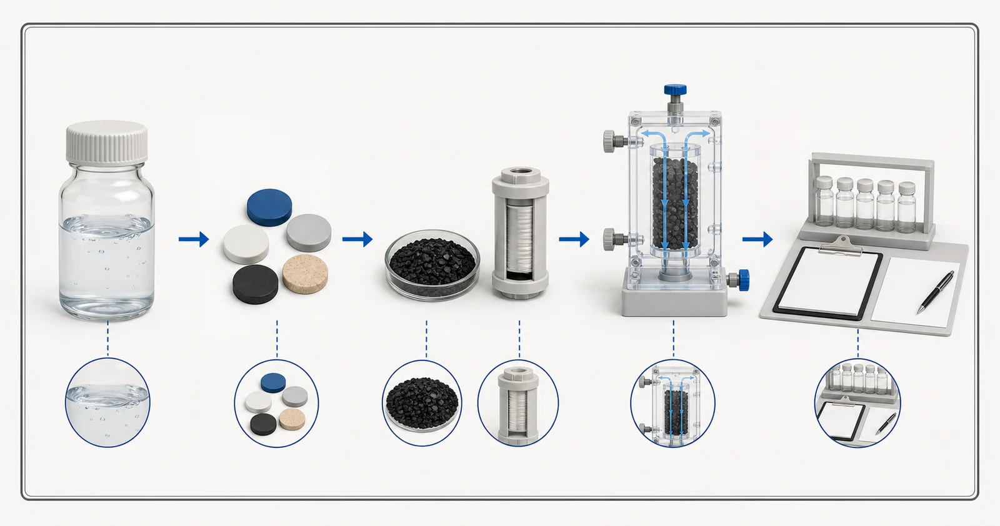

Câu trả lời trực tiếp
Than hoạt tính có thể là một phần của chiến lược xử lý PFAS, nhưng thuật ngữ PFAS bao gồm nhiều hợp chất và không có tuyên bố chung nào về than đủ làm cơ sở. Bằng chứng phải xác định các hợp chất PFAS được thử nghiệm, nồng độ đầu vào, nền nước, loại than và cấu tạo sản phẩm hoàn chỉnh, điều kiện lưu lượng hoặc tiếp xúc, lịch lấy mẫu và tiêu chí kết thúc. Các hợp chất có chuỗi dài hơn và ngắn hơn có thể có hành vi khác nhau, trong khi chất hữu cơ tự nhiên và các thành phần khác có thể cạnh tranh các vị trí hấp phụ. Đối với sản phẩm gia dụng, người mua nên xác minh chính xác sản phẩm được chứng nhận và tuyên bố về khả năng giảm chất tương ứng, đồng thời tuân thủ hướng dẫn bảo trì của sản phẩm. Đối với hệ thống công nghiệp, phân tích nước, bằng chứng từ thử nghiệm quy mô thí điểm hoặc ứng dụng thực tế, giám sát hiện tượng chất cần xử lý bắt đầu lọt qua lớp hấp phụ và kế hoạch thay thế là những nội dung trọng tâm khi đánh giá.

- Các hợp chất PFAS được nêu tên và nồng độ trong nước đầu vào
- Nền nước và các chất cạnh tranh
- Vật liệu lọc hoặc cấu tạo đã xác định
- Điều kiện thử nghiệm và các tiêu chí kết thúc
- Bằng chứng giám sát tại hiện trường
Hình minh họa khái niệm. Không phải kết quả thử nghiệm, chứng nhận sản phẩm hoặc bản vẽ kỹ thuật.
Bắt đầu từ vấn đề của người mua
Người mua có thể nhận được tuyên bố rằng một loại than phù hợp để xử lý PFAS mà không được biết những hợp chất nào đã được đưa vào thử nghiệm. Điều đó chưa đủ để so sánh sản phẩm. Không nên gộp PFOA, PFOS và các chất có chuỗi ngắn hơn rồi giả định rằng chúng có cùng một đáp ứng. Nước nguồn cũng rất quan trọng: thử nghiệm với nước có nền sạch trong phòng thí nghiệm không tự động dự báo hiệu quả trong nước ngầm, nước cấp đô thị hoặc dòng nước công nghiệp chứa chất hữu cơ và các chất cạnh tranh khác.
Cách xây dựng bằng chứng khác nhau giữa thiết bị xử lý tại điểm sử dụng được chứng nhận và lớp vật liệu xử lý công nghiệp được thiết kế riêng. Chứng nhận gắn với sản phẩm có trong danh mục chứng nhận, tiêu chuẩn, điều kiện thử nghiệm và tuyên bố cụ thể. Không nên áp dụng chứng nhận đó cho lõi lọc khác hoặc vật liệu dạng rời. Thay vào đó, dự án công nghiệp có thể sử dụng thử nghiệm vật liệu, mô hình hóa, thử nghiệm quy mô thí điểm và hệ thống có giám sát với các bình xử lý nối tiếp theo cấu hình bình trước–bình sau. Trang thông tin và báo giá phải xác định cách tiếp cận nào làm cơ sở cho khuyến nghị và những câu hỏi nào vẫn chưa được giải đáp.
Cần cung cấp báo cáo và dữ liệu vận hành nào
Việc đánh giá PFAS cần dữ liệu phân tích riêng cho từng hợp chất và thông tin được xem xét kỹ về bối cảnh lấy mẫu. Hãy sử dụng phương pháp phân tích phòng thí nghiệm phù hợp và nêu rõ giới hạn báo cáo đối với kết quả không phát hiện, thay vì chỉ gửi một giá trị tổng hoặc nhãn tiếp thị.
- Danh sách các chất PFAS được phân tích, kết quả cho từng hợp chất, giới hạn báo cáo và ngày lấy mẫu
- nguồn nước, vị trí lấy mẫu và mọi công đoạn xử lý trước khi lấy mẫu
- TOC hoặc cacbon hữu cơ hòa tan và các thành phần cạnh tranh có liên quan
- pH, nhiệt độ, độ đục và chất rắn lơ lửng
- lưu lượng trung bình và cực đại, thời gian vận hành hằng ngày và biến động nhu cầu dự kiến
- vật liệu than đề xuất, cấu tạo lõi lọc hoặc bình lọc và bằng chứng về lô sản phẩm
- mức mục tiêu tại đầu ra, phương pháp giám sát và thời gian trả kết quả phân tích
- tiêu chí thay thế, hướng dẫn bảo trì và kế hoạch xử lý vật liệu đã qua sử dụng
Báo cáo cần đủ mới để đại diện cho nguồn nước dự kiến và nên nêu ngày cùng vị trí lấy mẫu. Nếu nước thay đổi theo mùa, lô sản xuất hoặc trạng thái vận hành, hãy cung cấp khoảng biến động thay vì một kết quả được chọn cho thuận tiện. Nêu riêng mục tiêu nước sau xử lý cần đạt và kết quả phân tích hiện tại. Khi chưa biết một giá trị, hãy ghi rõ là chưa biết; một khoảng trống được thể hiện rõ an toàn hơn một con số phỏng đoán.
Thông tin thủy lực cần được xem xét cùng thông tin hóa học. Chỉ dùng lưu lượng trung bình có thể che khuất các đợt lưu lượng cực đại ngắn, chế độ vận hành gián đoạn và thời gian nước lưu đọng kéo dài. Cần xác nhận thời gian vận hành hằng ngày, nhu cầu cực đại, áp suất sẵn có, tổn thất áp suất cho phép, kích thước thiết bị và người chịu trách nhiệm giám sát, thay than. Những chi tiết này quyết định liệu một vật liệu vốn có vẻ phù hợp có thể được sử dụng trong hệ thống có thể vận hành và bảo trì hay không.
Cơ sở lựa chọn
Trước tiên, xác định tuyên bố. Đó có thể là giảm các hợp chất PFAS được nêu tên bằng một sản phẩm gia dụng có trong danh mục, hoặc kiểm soát các hợp chất PFAS được nêu tên để đạt mục tiêu dự án trong một hệ thống lớn hơn. Hãy xác nhận bằng chứng áp dụng cho tuyên bố đó thay vì viện dẫn nhận định chung về than hoạt tính. Thông tin của EPA lưu ý rằng việc xử lý phụ thuộc vào loại than, chiều sâu lớp vật liệu, lưu lượng, hợp chất PFAS cụ thể, nhiệt độ, chất hữu cơ và các thành phần khác; những biến số này cần được đưa vào đánh giá dự án.
Thứ hai, đọc điều kiện thử nghiệm. So sánh nước dùng trong thử nghiệm đánh giá khả năng xử lý với nguồn nước dự kiến và xác nhận liệu bằng chứng chỉ báo cáo các mẫu ban đầu hay theo dõi hệ thống khi tiến dần đến thời điểm chất cần xử lý bắt đầu lọt qua lớp hấp phụ. Mức giảm cao lúc ban đầu không xác lập được toàn bộ thời gian sử dụng giữa các lần thay thế. Việc đánh giá cần ghi nhận thể tích nước đã xử lý, điều kiện tiếp xúc, kết quả cho từng hợp chất và tiêu chí kết thúc được dùng để dừng thử nghiệm hoặc thay vật liệu.
Thứ ba, xác nhận việc bảo trì và kiểm chứng. Không thể tiếp tục giả định rằng bộ lọc không được thay theo yêu cầu vẫn hoạt động như khi thử nghiệm. Hệ thống công nghiệp cần có điểm lấy mẫu dễ tiếp cận, lịch phân tích và kế hoạch hành động có tính đến thời gian trả kết quả của phòng thí nghiệm. Khi viện dẫn chứng nhận, hãy xác minh danh mục chứng nhận hiện hành cho chính xác sản phẩm và tuyên bố tương ứng; không chỉ dựa vào biểu trưng, số hiệu tiêu chuẩn chung hoặc tuyên bố của nhà cung cấp.
Bối cảnh tiền xử lý, thiết bị và vận hành
Kiểm soát hạt trước GAC có thể cần được xem xét vì không nên sử dụng lớp hấp phụ như một bộ lọc chất rắn không được kiểm soát. Các bình xử lý nối tiếp theo cấu hình bình trước–bình sau có thể hỗ trợ giám sát vận hành và tạo thêm lớp ngăn chặn thứ hai, trong khi sản phẩm tại điểm sử dụng phải được lắp đặt và bảo trì theo hướng dẫn đã được kiểm chứng. Chất hữu cơ cạnh tranh và điều kiện nguồn nước thay đổi có thể ảnh hưởng đến kế hoạch thay thế trong cả hai trường hợp.
Quản lý PFAS cũng bao gồm các chất tồn dư sau xử lý. Các hợp chất bị giữ lại vẫn nằm trong hoặc gắn với vật liệu đã qua sử dụng, lõi lọc hoặc dung dịch tái sinh, vì vậy dự án cần có phương án xử lý phù hợp. Yuchen Water có thể trao đổi về vật liệu than, lõi lọc, bình lọc và hỗ trợ thiết bị liên quan, nhưng các quyết định về chất thải tại từng cơ sở, quy định và quy trình cuối cùng cần có sự tham gia của các bên chịu trách nhiệm dự án và phải căn cứ vào các yêu cầu hiện hành.
Những sai lầm thường gặp
- Sử dụng thuật ngữ PFAS như thể đó là một hợp chất duy nhất với một đáp ứng hấp phụ duy nhất
- Áp dụng chứng nhận của một sản phẩm có trong danh mục chứng nhận cho lõi lọc khác hoặc vật liệu dạng rời
- Báo cáo mức giảm ban đầu như thể đó là tuổi thọ sử dụng của hệ thống
- Bỏ qua sự cạnh tranh của chất hữu cơ, các hợp chất có chuỗi ngắn hơn và giới hạn phân tích
- Không cung cấp kế hoạch bảo trì hoặc giám sát hiện tượng chất cần xử lý bắt đầu lọt qua lớp hấp phụ
Bằng chứng và phạm vi dịch vụ
Yuchen Water không công bố tuyên bố áp dụng chung về tỷ lệ giảm PFAS, dung lượng xử lý hoặc tuổi thọ sử dụng cho tất cả sản phẩm than hoạt tính. Mọi báo cáo được cung cấp chỉ áp dụng cho mẫu, cấu tạo và điều kiện đã xác định. Người mua yêu cầu giải pháp PFAS nên cung cấp dữ liệu riêng cho từng hợp chất và chế độ làm việc dự kiến của hệ thống để đối chiếu với bằng chứng hiện có mà không mở rộng phạm vi áp dụng quá mức.
Kết quả đánh giá kỹ thuật có thể khuyến nghị thực hiện thêm công việc trong phòng thí nghiệm, thử nghiệm quy mô thí điểm, sử dụng một nhóm công nghệ xử lý khác hoặc quy trình kết hợp. Đây là kết quả hợp lý khi bằng chứng chưa đầy đủ. Mục tiêu không phải là buộc mọi dự án PFAS đều sử dụng than hoạt tính; mục tiêu là xác định hướng lựa chọn vật liệu và thiết bị có cơ sở, cùng các biện pháp giám sát và kiểm soát trong quá trình sử dụng.
Yuchen Water xem xét mục tiêu và bằng chứng trước, sau đó xác định dạng than phù hợp và những vấn đề về vật liệu cần làm rõ, nhu cầu tiền xử lý và thiết bị hỗ trợ, cùng những tài liệu hoặc thử nghiệm vẫn còn cần thiết. Kết quả có thể là định hướng sơ bộ, yêu cầu bổ sung thông tin hoặc khuyến nghị về vật liệu và thiết bị có cơ sở. Khuyến nghị không được đưa ra chỉ vì người mua đã cung cấp tên sản phẩm.
Sau khi cung cấp sản phẩm, hỗ trợ kỹ thuật có thể bao gồm xác nhận tài liệu, giải đáp về lắp đặt và súc rửa, hướng dẫn chạy thử đưa vào vận hành từ xa, các điểm giám sát và lập kế hoạch thay thế trong phạm vi đã thỏa thuận. Hiệu quả thực tế vẫn phụ thuộc vào vật liệu được phê duyệt, hệ thống thiết bị đầy đủ, nước nguồn, việc lắp đặt, vận hành và bảo trì. Hướng dẫn đã công bố không thể thay thế việc đánh giá dự án.
Không cam kết về vật liệu cuối cùng, dung lượng xử lý, tuổi thọ sử dụng, tỷ lệ loại bỏ hoặc kết quả dự án trước khi xem xét báo cáo, cấu tạo, bằng chứng và điều kiện vận hành.
Nguồn kỹ thuật chính thức
Các nguồn này giải thích nguyên lý xử lý hoặc giới hạn phạm vi chứng nhận. Các nguồn này không chứng nhận sản phẩm của Yuchen Water và không thay thế bằng chứng riêng cho từng dự án.
Hướng dẫn liên quan về than hoạt tính
Tiếp tục tìm hiểu nhóm tài liệu kiến thức, rà soát bằng chứng của các mẫu được chọn chỉ trong phạm vi giới hạn đã nêu, so sánh các dạng sản phẩm hoặc gửi báo cáo để đánh giá kỹ thuật.